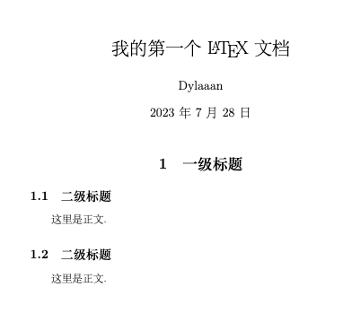
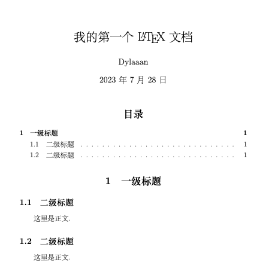

LaTex快速上手
下载LaTex编译器（或者说渲染引擎？）
常见的LaTex编译器有以下三种：
- MacTeX：macos系统专用的LaTex编译器
- TeXLive：windows和Linux系统适用的LaTex编译器
- MiKTeX：一个适用于全平台的轻量级LaTex编译器（只安装最基础的部分）
三者都可以通过清华大学镜像网站下载
前置知识
latex源码文件的后缀为.tex，通过编译得到所需的pdf文件
文档类型
LaTex有多种文档类型可供选择，常见的有：
- 英文：
book、article和beamer - 中文：
ctexbook、ctexart和ctexbeamer，这些类型自带了中文支持
不同文档类型在辨析的过程中有一定差异，如果直接修改文档类型的话可能会报错
在tex文件的第一行，输入如下内容用于设置文档类型：
1 | \documentclass{ctexart} |
另外，一般也可以在
\documentclass处设置基本参数，如下：
1 | \documentclass[12pt,a4paper,oneside]{ctexart} |
字体大小为12pt，纸张大小为A4，单面打印
文件的正文部分需要放入document环境中，在document环境外的部分不会被渲染出来。如下所示
1 | \documentclass{ctexart} |
宏包
为了完成一些复杂的功能，需要在导言区（document环境之前）加载宏包。加载宏包的语法是：\usepackage{}，常见的宏包有：amsmath、amsthm、amssymb、graphicx。如下所示
1 | \usepackage{amsmath, amsthm, amssymb, graphicx} |
基础语法
标题
标题关键词为\title{}，还有同类关键词如\author{}、\date{}，这些标题信息均需要在导言区声明。如果需要在文档中显示这些标题信息，需要在正文指定位置使用关键词\maketitle。如下所示：
1 | \documentclass[12pt, a4paper, oneside]{ctexart} |
正文
正文，即写在document中的内容，默认情况下为首行缩进。
正文中的空格、回程等符号都会被自动忽略，如果需要输入，则需要输入特定符号来代替。
另起一页的关键词为\newpage。
在编写文档时，为了保证美观和统一，通常将中文标点符号替换为英文标点符号，这比较适合数学类型的文档。
在正文中可以设置局部的特殊字体：
| 字体 | 命令 |
|---|---|
| 直立 | |
| 意大利 | |
| 倾斜 | |
| 小型大写 | |
| 加宽加粗 |
章节
对于ctexart文档类型，章节可以用\section{}和\subsection{}来标记，如下所示：
1 | \documentclass[12pt, a4paper, oneside]{ctexart} |

目录
在有了章节的结构之后，使用\tableofcontents命令就可以在指定位置生成目录。通常带有目录的文件需要编译两次，因为需要先在目录中生成.toc文件，再据此生成目录。
1 | \documentclass[12pt, a4paper, oneside]{ctexart} |

图片
插入图片需要使用宏包graphicx，常用语法如下所示：
1 | \begin{figure}[htbp] |
其中，[htbp]的作用是自动选择插入图片的最优位置，\centering设置让图片居中，[width=8cm]设置了图片的宽度为8cm，\caption{}用于设置图片的标题。
表格
LaTeX中表格的插入较为麻烦，可以直接使用Create LaTeX tables online – TablesGenerator.com来生成。建议使用如下方式：
1 | \begin{table}[htbp] |
列表
LaTeX中的列表环境包含无序列表itemize、有序列表enumerate和描述description，以enumerate为例，用法如下：
1 | \begin{enumerate} |
另外，也可以自定义\item的样式：
1 | \begin{enumerate} |
定理环境
定理环境需要使用amsthm宏包，首先在导言区加入：
1 | \newtheorem{theorem}{定理}[section] |
其中{theorem}是环境的名称，{定理}设置了该环境显示的名称是“定理”，[section]的作用是让theorem环境在每个section中单独编号。在正文中，用如下方式来加入一条定理：
1 | \begin{theorem}[定理名称] |
其中[定理名称]不是必须的。另外，我们还可以建立新的环境，如果要让新的环境和theorem环境一起计数的话，可以用如下方式：
1 | \newtheorem{theorem}{定理}[section] |
另外，定理的证明可以直接用proof环境。
页面
最开始选择文件类型时，我们设置的页面大小是a4paper，除此之外，我们也可以修改页面大小为b5paper等等。
一般情况下，LaTeX默认的页边距很大，为了让每一页显示的内容更多一些，我们可以使用geometry宏包，并在导言区加入以下代码：
1 | \usepackage{geometry} |
另外，为了设置行间距，可以使用如下代码：
1 | \linespread{1.5} |
页码
默认的页码编码方式是阿拉伯数字，用户也可以自己设置为小写罗马数字：
1 | \pagenumbering{roman} |
另外，aiph表示小写字母，Aiph表示大写字母，Roman表示大写罗马数字，arabic表示默认的阿拉伯数字。如果要设置页码的话，可以用如下代码来设置页码从0开始：
1 | \setcounter{page}{0} |
数学公式的输入
行内公式
行内公式通常使用$..$来输入，这通常被称为公式环境，例如：
1 | 若$a>0$, $b>0$, 则$a+b>0$. |
公式环境通常使用特殊的字体，并且默认为斜体。需要注意的是，只要是公式，就需要放入公式环境中。如果需要在行内公式中展现出行间公式的效果，可以在前面加入\displaystyle，例如
1 | 设$\displaystyle\lim_{n\to\infty}x_n=x$. |
行间公式
行间公式需要用$$..$$来输入，笔者习惯的输入方式如下：
1 | 若$a>0$, $b>0$, 则 |
这种输入方式的一个好处是，这同时也是Markdown的语法。需要注意的是，行间公式也是正文的一部分，需要与正文连贯，并且加入标点符号。
关于具体的输入方式，可以参考在线LaTeX公式编辑器-编辑器 (latexlive.com)，在这里只列举一些需要注意的。